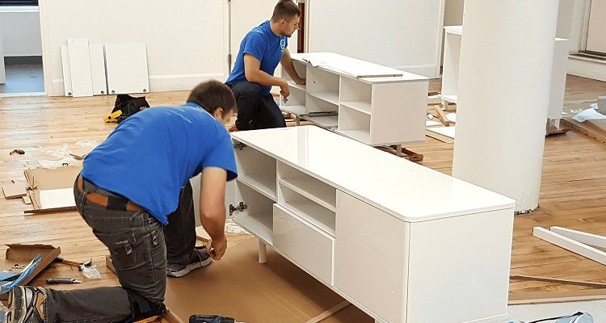

تُعد عملية فك وتركيب عفش بجدة الركيزة الأساسية لأي عملية نقل أثاث ناجحة؛ فالأثاث الحديث لم يعد مجرد ألواح خشبية بسيطة يمكن تحريكها بسهولة، بل أصبح يشتمل على أنظمة هيدروليكية دقيقة، ومفصلات سوفت كلوز (Soft-Close)، وآليات سحب معقدة، ومواد مصنعة كالـ MDF والـ HDF التي تتطلب دقة هندسية عالية عند الفك وإعادة التجميع.
إن محاولة فك الأثاث بطريقة عشوائية أو الاعتماد على عمالة غير مدربة غالباً ما يؤدي إلى تآكل مجاري البراغي، انكسار كامات التثبيت الخفية، أو اعوجاج أبواب الدواليب والجرارات، مما يفقد الأثاث رونقه وعمره الافتراضي. في شركة القصر السعودي لنقل العفش، نوفر لك طاقماً معتمداً من أفضل النجارين والفنيين المتخصصين في التعامل مع أرقى وأعقد ماركات الأثاث في المملكة.
هل تبحث عن نجار فك وتركيب عفش محترف في منزلك الآن؟
نوفر فنيين مؤهلين ومعهم كامل الحقائب الهندسية لخدمتك فوراً في أي حي بمدينة جدة.

فك وتركيب الأثاث المنزلي والمكتبي بأحدث دريلات ومعدات النجارة الحديثة بجدة
أنواع الأثاث التي نختص بفكها وتركيبها بجدة
يمتلك فنيو شركة القصر السعودي خبرة ميدانية طويلة تمتد لأكثر من 15 عاماً في التعامل مع شتى أنواع الأثاث والموبيليا المستوردة والمحلية:
غرف النوم المودرن والكلاسيكية
فك وتجميع غرف النوم التركية، الإيطالية، والوطنية، بما يشمل الأسرة المعلقة، الهيدبورد المنجد، خزائن الملابس الكبيرة، التسريحات المضيئة، والكومودينات ذات مسارات السحب الهيدروليكية.
أثاث ايكيا والموبيليا السويدية
التعامل الدقيق مع كامات التثبيت Minifix والبراغي المخفية في دواليب PAX وأسرة MALM دون إحداث أي شرخ في خشب الحبيبات أو الـ MDF المضغوط.
المطابخ الخشبية والألوميتال
فك وتركيب الكبائن العلوية والسفلية، مطابخ الصاج والكلادينج، وتعديل مقاسات الرخام الطبيعي والصناعي ليتطابق مع زوايا المطبخ الجديد.
الأثاث المكتبي ومحطات العمل
فك وتجميع مكاتب المديرين، طاولات الاجتماعات الكبرى، قواطع البارتيشن، كبائن الملفات الرقمية، ومحطات العمل المشتركة (Workstations) للشركات.
فني تركيب أثاث ايكيا بجدة: الدقة التي تحمي خشبك
يتميز أثاث إيكيا (IKEA) بتصاميمه العصرية الذكية، إلا أن إعادة فكه وتجميعه يمثل التحدي الأكبر لأي شخص غير متخصص؛ حيث تعتمد قطع ايكيا على قفل الكامات الخشبية الرقيقة ونظام البراغي المخفية المزدوجة. أي شد مفرط أو عزم دوران خاطئ يؤدي إلى تلف مسارات البراغي في خشب الحبيبات، مما يجعل القطعة متخلخلة وغير متماسكة بعد النقل.
القواعد الصارمة التي يتبعها نجارونا مع موبيليا ايكيا:
- ضبط عزم الدريل الكهربائي (Clutch Torque): نستخدم مفكات كهربائية مزودة بخاصية ضبط العزم لتفادي الضغط الزائد على الألواح الهشة.
- حفظ كتالوجات التجميع الأصلية: يتوفر لدى فنيينا مكتبة رقمية بمخططات التجميع الرسمية لكافة إصدارات ايكيا لضمان إعادة البناء وفق تسلسل المصنع.
- توفير بدائل المسامير والكامات المفقودة: نحمل في سياراتنا حقائب إكسسوارات مطابقة لمقاسات ايكيا لتعويض أي قطعة تالفة أو مفقودة مجاناً أثناء التركيب.
فك وتركيب غرف النوم والدواليب السحابة الهيدروليكية
تعتبر غرف النوم المركز الأهم في المنزل، وتتطلب الدواليب ذات الأبواب السحابة (Sliding Wardrobes) مهارة عالية لضبط مجاري الانزلاق العلوية والسفلية وممتصات الصدمات الهيدروليكية.
فك الأبواب والأرفف
فصل الأبواب الجرارة وتفريغ الأرفف وتغليف المرايا بفقاعات سميكة 3 طبقات.
ترقيم وتكويد الألواح
ترقيم الجوانب والقاعدة والسقف لضمان تركيب الهيكل بنفس توازنه الأصلي دون خلل.
الوزن بميزان الماء
ضبط استقامة الدولاب بميزان الماء الرقمي لمنع احتكاك الأبواب بالأرضيات أو ميلانها.
💡 للاطلاع على تفاصيل موسعة ودليل شامل لفك مختلف أنواع الأسرة وغرف الأطفال والماستر، تفضل بزيارة صفحتنا المخصصة لـ فك وتركيب غرف النوم بجدة.
فك وتركيب المطابخ وقص الرخام وتعديل المقاسات
غالباً ما تختلف أبعاد المطبخ في المنزل الجديد عن المنزل القديم من حيث أماكن تمديدات السباكة ومخارج الشفاط ومقابس الكهرباء، وهو ما يتطلب نجار مطابخ محترفاً يمتلك مهارات القص والتعديل الهندسي:
فك وتثبيت الوحدات المعلقة (Wall Cabinets)
نستخدم خوابير تثبيت فولاذية (Fischer Anchors) لضمان ثبات الكبائن العلوية وقدرتها على تحمل أوزان الأواني الثقيلة بأمان تام.
قص وتلحيم الرخام الطبيعي والصناعي
نوفر صواريخ قص مائية متطورة لتعديل مقاسات أسطح الرخام، فتح تجاويف أحواض المجلى (Sinks) ومواقد الغاز البلت-إن بدقة مليمترية.
إضافة أرفف وبانوهات تعويضية
في حال وجود فوارغ بين الدواليب والجدران في المطبخ الجديد، نوفر ألواح فيلر (Filler Panels) لمطابقة المظهر الجمالي المنسجم.
منهجية فك وتركيب العفش المعتمدة لدى القصر السعودي
لا نعتمد على الارتجال؛ بل نطبق بروتوكولاً تقنياً من 5 مراحل لضمان تجربة نقل خالية تماماً من المتاعب والأخطاء:
المرحلة الأولى: المعاينة وفحص سلامة الأثاث
يقوم رئيس الفريق بفحص كل قطعة أثاث، تدوين أي خدوش سابقة، والاتفاق مع العميل على خطة الفك والتوزيع في المنزل الجديد.
المرحلة الثانية: الترقيم الهندسي (Coding & Labeling)
توضع علامات مشفرة على الألواح والمسارات توضح جهة اللوح (يمين، يسار، علوي) واسم الغرفة لتسريع عملية التركيب بنسبة 60%.
المرحلة الثالثة: العزل وحقائب المسامير الذكية
تجمع المسامير والمقابض والمفصلات داخل أكياس Zip-lock شفافة تثبت بشريط عازل خلف اللوح الرئيسي، مما يقضي على مشكلة ضياع المسامير نهائياً.
المرحلة الرابعة: التغليف الوقائي الفوري
تغلف حواف الألواح بزوايا كرتونية مقواة ورولات الفقاعات الهوائية والنايلون الاستريتش لحمايتها من أي احتكاك أثناء تنزيلها وتحميلها بالدينا.
المرحلة الخامسة: التجميع وضبط المحاذاة والتسليم
إعادة تجميع القطع في المواقع المحددة، تشحيم المفصلات، وزن الدواليب، ومراجعة العميل خطوة بخطوة قبل استلام العمل والتوقيع على نموذج الضمان.
جدول أسعار فك وتركيب العفش بجدة لعام 2026
نقدم في شركة القصر السعودي أسعاراً شفافة وواضحة بدون أي رسوم خفية، مع تقديم خصومات خاصة عند دمج الفك والتركيب مع باقات النقل والتغليف الكاملة:
| نوع الخدمة أو قطعة الأثاث | سعر الفك فقط | سعر التركيب فقط | سعر الفك والتركيب معاً |
|---|---|---|---|
| غرفة نوم ايكيا القياسية (سرير + دولاب 3 ضلفة + تسريحة) | 80 - 120 ريال | 100 - 150 ريال | 180 - 250 ريال |
| غرفة نوم ماستر كلاسيكية / تركية (دواليب سحب هيدروليك 6 ضلفة) | 120 - 180 ريال | 180 - 250 ريال | 280 - 400 ريال |
| دولاب فردي مستقل (2 إلى 4 أبواب) | 50 - 80 ريال | 70 - 100 ريال | 100 - 160 ريال |
| مطبخ خشب أو ألوميتال (سعر المتر الطولي) | 30 - 45 ريال/م | 45 - 65 ريال/م | 60 - 90 ريال/م |
| طاولة طعام كبيرة مع 8 كراسي وبوفيه | 60 - 90 ريال | 80 - 120 ريال | 130 - 190 ريال |
| شاشة تلفزيون جدارية كبيرة مع الحامل الجداري | 30 - 50 ريال | 40 - 70 ريال | 60 - 90 ريال |
| مكيف سبليت (فك مع حفظ الفريون + تركيب) | 60 - 80 ريال | 80 - 120 ريال | 130 - 180 ريال |
| باقة شقة كاملة (3 غرف نوم + صالة + مطبخ) | 350 - 500 ريال | 450 - 650 ريال | 650 - 950 ريال ⭐ عرض خاص |
هل تحتاج لتسعير مخصص لشقتك أو فلتك بجدة؟
أرسل لنا صور أو فيديو لقطع الأثاث عبر واتساب لتحصل على سعر فوري ودقيق في دقائق.
مقارنة بين نجارين شركة القصر والعمالة العشوائية في الشارع
الاستعانة بالعمالة الحرة المنتشرة على الطرقات قد تبدو خياراً رخيصاً ظاهرياً، ولكنها تكلف أصحابها أضعافاً نتيجة الأضرار والتلفيات:
| وجه المقارنة | نجارو شركة القصر السعودي ⭐ | العمالة الحرة وعمال الشوارع |
|---|---|---|
| الخبرة بأنظمة الأثاث الحديث | ✔️ نجارون متخصصون في ايكيا، الإيطالي، والتركي | ❌ خبرة عامة سطحية وتجربة على أثاث العميل |
| المعدات والأدوات المستخدمة | ✔️ دريلات عزم حديثة، موازين ليزر، ومفكات مغناطيسية | ❌ مفكات يدوية ومطارق تكسر الأخشاب ومجاري المسامير |
| الحفاظ على المسامير والمفصلات | ✔️ ترقيم هندسي وأكياس Zip-lock مشفرة لكل قطعة | ❌ خلط المسامير في علب عشوائية وضياع القطع الصغيرة |
| الضمان والمسؤولية القانونية | ✔️ عقد رسمي وضمان مالي ضد أي كسر أو تلف | ❌ لا يوجد أي ضمان واختفاء العامل عند حدوث كسر |
| الالتزام بالمواعيد وسرعة الإنجاز | ✔️ وصول دقيق بالموعد وإنجاز الشقة كاملة في 3-4 ساعات | ❌ تأخير مستمر ومماطلة لطلب مبالغ إضافية |
المعدات والأدوات التي يعتمد عليها نجارونا في جدة
الدقة تبدأ من الأدوات الاحترافية؛ لذلك جهزنا جميع فرقنا الميدانية بأحدث معدات النجارة الألمانية والأمريكية لضمان أعلى درجات السلامة:
دريلات تحكم العزم الرقمية
تتحكم بقوة ربط وفك البراغي بدقة متناهية لمنع اتساع ثقوب الخشب.
موازين ماء رقمية وليزر
لضبط استقامة الدواليب والأرفف المعلقة بدقة 100% ومنع ميلانها.
رؤوس مفكات مغناطيسية
تمسك البراغي الدقيقة وتمنع سقوطها داخل الهياكل المجوفة أو فقدانها.
مطارق مطاطية ناعمة (Rubber Mallets)
لتجميع وتعشيق الأخشاب دون ترك أي أثر أو خدش على طبقة الدهان والورنيش.
مقابض شفط زجاجية مزدوجة
لحمل وفك الواجهات الزجاجية الكبيرة والمرايا بدون ملامسة الحواف الحادة.
حقائب إكسسوارات تعويضية
تحتوي على مئات المسامير والمفصلات والكامات الجاهزة لتعويض أي قطعة ناقصة.
نصائح وإرشادات لتجهيز الأثاث قبل وصول فريق الفك
لضمان إتمام الخدمة بأقصى سرعة وأعلى كفاءة، ننصحك باتباع الخطوات البسيطة التالية:
1. إفراغ محتويات الدواليب والأدراج
أفرغ جميع الملابس والمستندات والأواني في كراتين مسبقاً، فالأثاث الثقيل لا يمكن فكه بأمان وهو ممتلئ بالمحتويات.
2. عزل المقتنيات الشخصية والذهب
احتفظ بالمجوهرات، النقود، المفاتيح، والوثائق الهامة في حقيبتك الشخصية الخاصة قبل بدء فريق العمل.
3. تحديد مواقع الأثاث في المنزل الجديد
حدد مسبقاً جدار كل دولاب أو سرير في البيت الجديد لتوجيه النجارين مباشرة وتفادي إعادة تحريك القطع الثقيلة.
4. توفير مساحة كافية للفك
أخلِ أرضية الغرفة من السجاد الصغير أو العوائق لتسهيل وضع الألواح المفكوكة أفقياً وتغليفها بحرية تامة.
نغطي كافة أحياء ومناطق مدينة جدة
تمتلك شركة القصر السعودي سيارات ورش نجارة متنقلة تتواجد في نقاط استراتيجية بجدة لتلبية طلبك خلال 45 دقيقة فقط:
أحياء شمال جدة
- ✔️ حي الحمدانية
- ✔️ حي النعيم
- ✔️ حي الروضة
- ✔️ حي الزهراء
- ✔️ أبحر الشمالية والجنوبية ←
أحياء وسط وشرق جدة
- ✔️ حي الصفا
- ✔️ حي المروة
- ✔️ حي النسيم
- ✔️ حي الرحاب
- ✔️ حي السامر والواحة ←
أحياء غرب وجنوب جدة
الأسئلة الأكثر شيوعاً عن فك وتركيب العفش بجدة
تبدأ التكلفة من 150 إلى 250 ريال للغرف العادية وغرف ايكيا، وتصل إلى 300 - 400 ريال لغرف النوم الكلاسيكية والماستر ذات الدواليب الكبيرة السحابة (6 إلى 8 ضلف) وأنظمة الهيدروليك. كما تتوفر باقات مخفضة عند طلب نقل الشقة كاملة.
نعم، بنسبة 100%. نتبع نظام حقائب التكويد؛ حيث توضع مسامير ومفصلات ومقابض كل قطعة في كيس Zip-lock مستقل مثبت بشريط آمن خلف اللوح الرئيسي للقطعة نفسها، بالإضافة إلى حمل نجارنا لحقيبة مسامير وبدائل إضافية لتعويض أي قطعة مفقودة مسبقاً.
بالتأكيد! نوفر خدمة فك وتركيب القطع المنفردة كالدواليب، الأسرة، شاشات التلفزيون، المطابخ، أو طاولات الطعام بدون اشتراط طلب نقل الشقة كاملة، بأسعار تبدأ من 80 ريال فقط.
نعم، نختص بتركيب كافة منتجات ايكيا وهوم بوكس وميداس الجديدة بالكرتون بالاعتماد على كتالوجات المصنع الأصلية وبأدوات عزم كهربائية تمنع تلف الأخشاب والواجهات.
نعم، يضم فريقنا فنيين مدربين لفك وتركيب الستائر الرول والقماشية، الشاشات الجدارية، النجف والثريات الكريستالية، وفك مكيفات الاسبليت مع حبس الفريون بأمان تام.
شركة القصر السعودي تقدم ضماناً رسمياً معتمداً؛ نتحمل بموجبه المسؤولية الكاملة عن أي تلف أو خدش ناتج عن الفك أو التركيب، ونقوم بتعويض العميل فورياً أو استبدال القطعة وإصلاحها على نفقتنا الخاصة.
بفضل خبرة نجارنا والعمل الجماعي المنظم، يستغرق فك شقة من 3 غرف نوم ومجلس ومطبخ حوالي ساعتين إلى ساعتين ونصف، وتستغرق عملية إعادة التركيب والضبط في الموقع الجديد حوالي 3 إلى 4 ساعات كحد أقصى.
جاهز لنقل وفك أثاثك بدون خدش واحد؟
تواصل مع خبراء النجارة في شركة القصر السعودي الآن، واحصل على معاينة فورية وعرض سعر مخصص لمنزلك في أي حي بجدة.